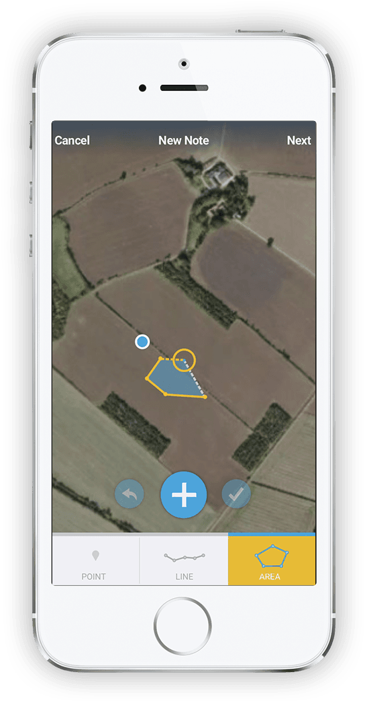
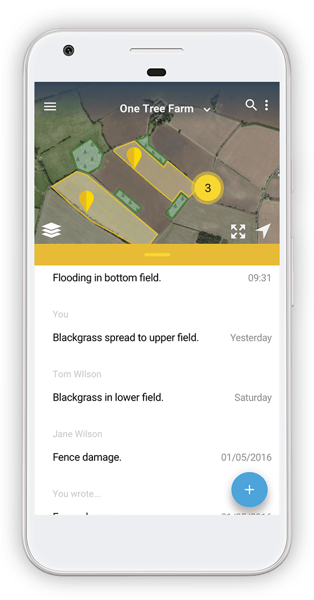

Keep track of what's happening on your farm, wherever you are.
fieldmargin is an easy to use visual record of your farm. Draw maps, make notes, leave messages for your team and more, with or without internet connection.


Available on:
 Android
Android